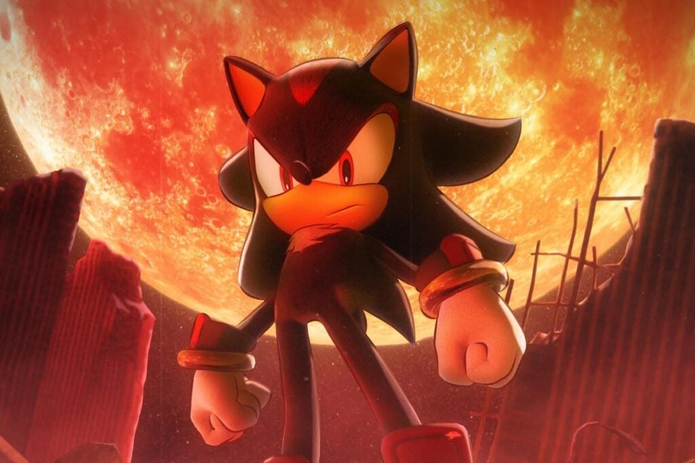

Main Page
Fifty years ago, Shadow was created on the Space Colony ARK by Gerald Robotnik, and grew up there alongside the professor's ailing granddaughter, Maria.
Gerald created Shadow to be the Ultimate Life Form as part of the secretive Project Shadow. However, a series of tragedies befell the ARK.
One day, the military organization GUN executed a cover-up operation on the ARK, leading to Maria's death and Gerald's arrest and execution. Shadow was captured and put into stasis on Prison Island.
Shadow was initially only intended to appear in Sonic Adventure 2, which ended with his apparent death. During the development of Sonic Heroes, there were internal meetings at Sega regarding whether Shadow (and characters such as E-102 Gamma) should stay dead or return.[19] However, his popularity among fans led to his return in future games.[11] Additionally, Sonic Team was interested a spin-off game starring Shadow, which eventually became Shadow the Hedgehog. Iizuka mentioned that they had always intended to maintain the mystery around Shadow and had wanted to feature him in his own game since his introduction.[20] Shadow's character allowed the developers to introduce elements otherwise considered inappropiate for the series, like weapons.[21] Sonic series co-creator Yuji Naka also believed that by focusing on Shadow for his own game, they could use his different identity from Sonic to build upon the Sonic brand.[2